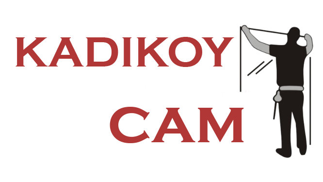
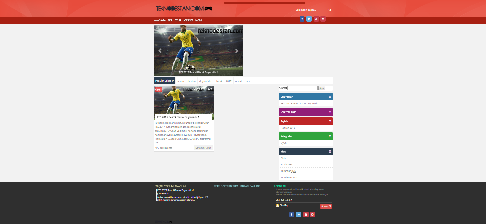

Kadıköy'deki cam firmasına ait web sitesi, sunduğu hizmetlerin kalitesini
yansıtan bir şekilde tasarlandı ve optimize edildi. Bu çaba, müşterilere en iyi deneyimi
sunmayı hedefleyen bir yaklaşımın bir parçası olarak gerçekleştirildi.

Teknodestan
Teknodestan.com, son teknoloji ürünleri hakkında bilgi sunar ve teknoloji meraklılarını bir
araya getirirdi. Kullanıcı dostu arayüzü ve kapsamlı içeriğiyle dikkat çekiyordu. Ancak,
2018 yılında kapandı. Bu proje, tasarım ve kodlama becerilerimi sergileme fırsatı sağladı.